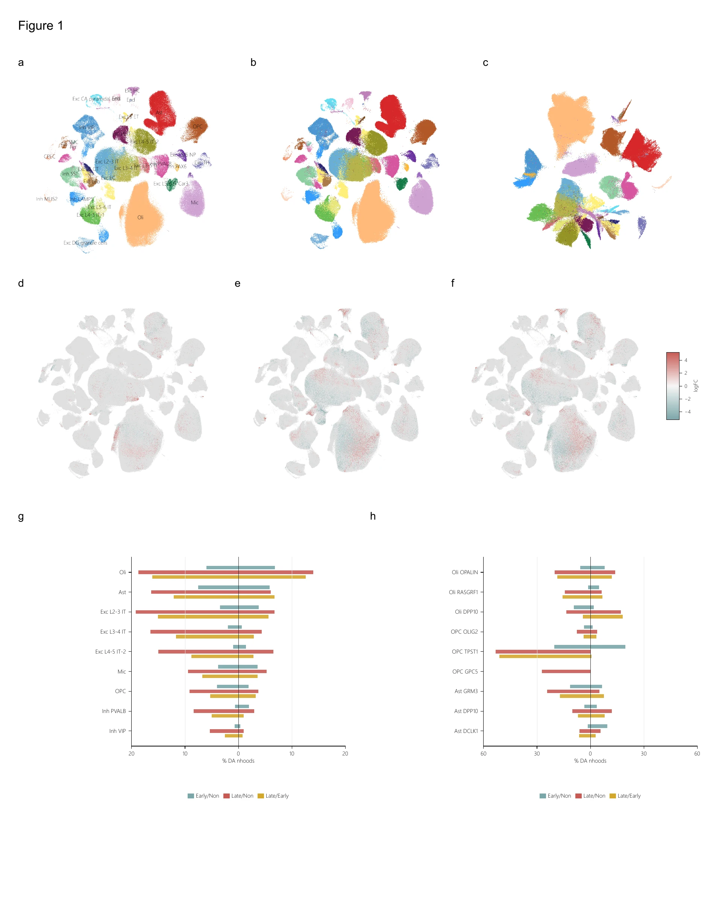
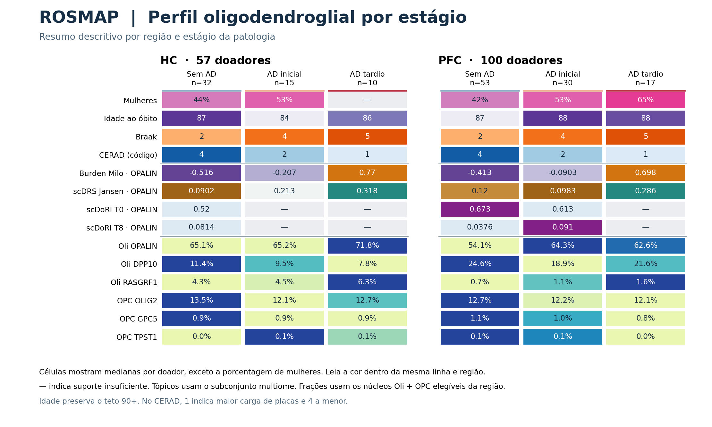
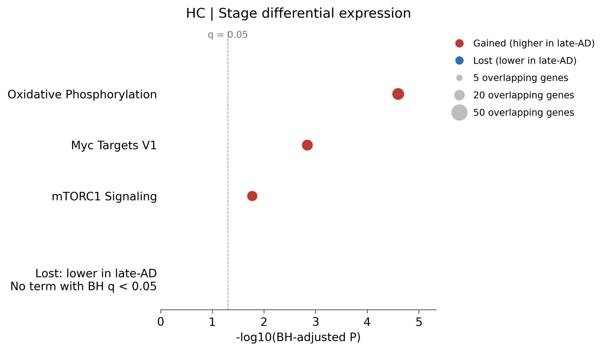
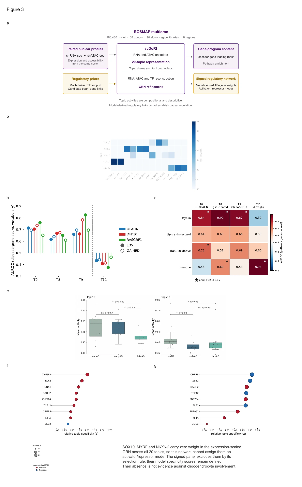
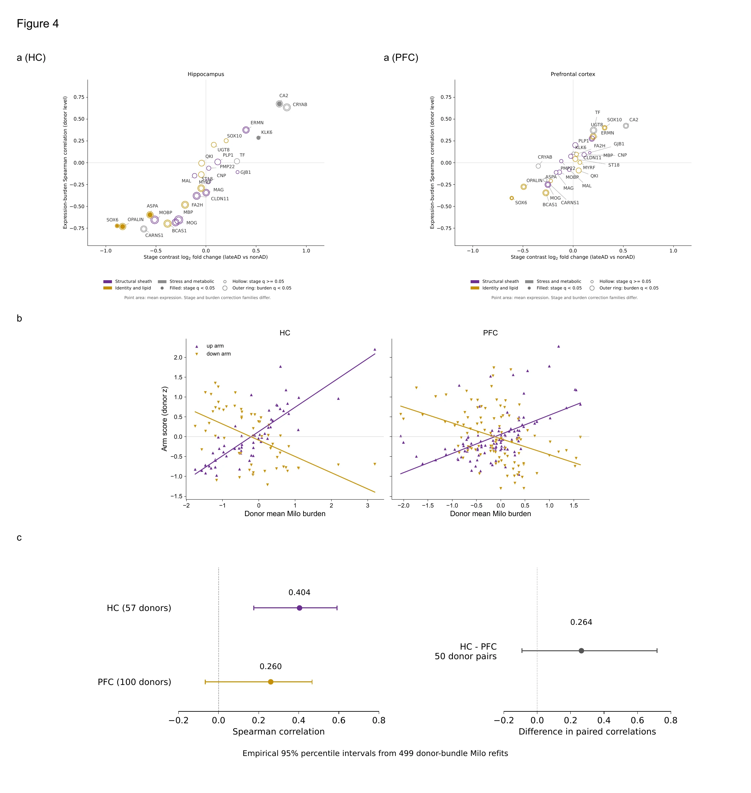
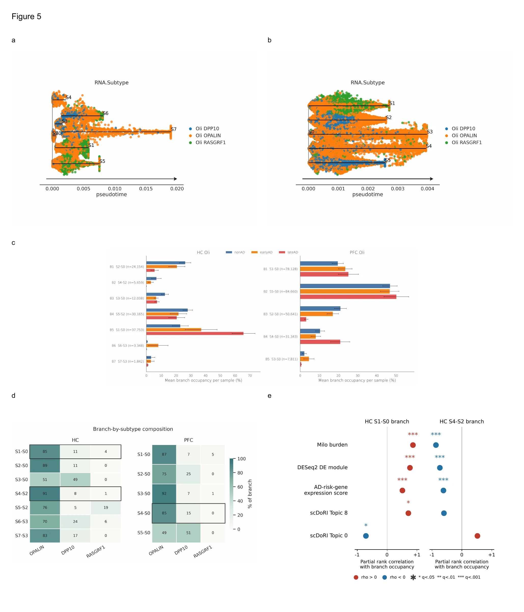

FIGURA 01
Mapa da abundância celular
Situar a análise no atlas de ROSMAP e mostrar por que os oligodendrócitos maduros merecem um recorte próprio.

Painel por painel
aAtlas de RNA anotado
Mostra onde aparecem as classes celulares no mapa de expressão por núcleo.
bO mesmo mapa sem rótulos
Mantém as coordenadas e permite ver o contorno dos grupos antes de sobrepor os resultados do Milo.
cAtlas de acessibilidade da cromatina
Mostra o mapa de referência de snATAC-seq, a modalidade que mede regiões abertas do DNA.
dAlzheimer inicial versus referência
Localiza no mapa de RNA as células-índice das vizinhanças com abundância diferente entre earlyAD e nonAD.
fAlzheimer tardio versus inicial
Mostra as vizinhanças que distinguem lateAD de earlyAD.
gQuais classes concentram as alterações
Compara as frações de vizinhanças enriquecidas e depletadas por classe celular e contraste.
hQuais subtipos contribuem
Abre o resumo em subtipos selecionados, incluindo OPALIN e OPCs, e dá contexto para o foco da Figura 2.
Legenda técnica original em inglês
Multi-region Milo neighbourhood-level differential abundance localizes AD-associated cellular remodeling to mature oligodendrocyte neighbourhoods.
(a-c) Reference embeddings. Panel a shows the annotated snRNA-seq atlas, b the same embedding without labels and c the snATAC-seq reference. The source annotations and coordinates were retained. (d-f) Significant neighbourhoods on the snRNA-seq reference. Coloured points mark neighbourhood index-cell coordinates, with grey showing the atlas nuclei in the background; these are not per-cell membership projections. Each point uses the contrast matching its dominant region, with spatial false-discovery rate < 0.10. Panels d, e and f show early AD versus nonAD, late AD versus nonAD, and late AD versus early AD, respectively. The graph is shared across regions, but the count models were fitted separately within region with one sample per donor.
(g) Cell-class differential-abundance footprint. Diverging bars display enriched and depleted percentages within each class and pathology contrast for nine classes selected by neighbourhood abundance. Oligodendrocytes contain 18,375 differentially abundant neighbourhoods in the union across three contrasts, representing 46.2% of the 39,767 significant neighbourhoods and 47.4% of their own 38,748-neighbourhood denominator. The union counts each neighbourhood once; contrast-specific bars can include the same neighbourhood in more than one contrast. OPCs rank eighth among the nine classes by the abundance criterion used for display. The separately fitted regional models preserve the leading oligodendrocyte count class from the earlier joint fit, whose corresponding count and share were 21,993 and 44.6%.
(h) Focused subtype burden. Bars show contrast-specific enriched and depleted neighbourhood percentages for selected oligodendrocyte, OPC and astrocyte subtypes. OLIG2 OPCs have the lowest union differential-abundance fraction among the displayed oligodendroglial subtypes (777 of 4,535 neighbourhoods, 17.13%). OPALIN oligodendrocytes carry 15,031 significant neighbourhoods among 30,225. Small denominators constrain the GPC5 and TPST1 OPC percentages, based on 11 and 143 neighbourhoods, respectively. These population-level summaries retain only neighbourhoods whose dominant region matches the contrast.
FIGURA 1 · PAINEL F PROPOSTO
Perfil oligodendroglial por estágio
O painel candidato fica abaixo da montagem de setembro. Cada coluna resume um estágio da patologia no HC ou no PFC. As faixas reúnem características clínicas, burden do Milo, scDRS Jansen, tópicos scDoRI e frações de seis subtipos Oli e OPC. O tom é comparável dentro de cada faixa e região.

FIGURA 02
Abundância e expressão em OPALIN
Mostrar como a expressão varia com estágio e burden em OPALIN e onde aparece a associação com o scDRS por doador.

Painel por painel
aExpressão por estágio no hipocampo
Mostra, gene a gene, a expressão diferencial em OPALIN entre lateAD e nonAD no hipocampo.
bExpressão por estágio no córtex pré-frontal
Mostra o mesmo contraste no PFC.
cExpressão ao longo do burden no hipocampo
Mostra a expressão de 16 genes selecionados para HC em faixas de burden com valor diferente de zero.
dExpressão ao longo do burden no córtex pré-frontal
Repete a leitura com os 16 genes selecionados para PFC.
eAtividade dos módulos ao longo do burden
Os pontos mostram as médias de 5 a 6 doadores agrupados pelo burden, para cada módulo. As linhas são tendências descritivas das médias agrupadas. A Figura 2e mostra atividade de módulos. O teste de enriquecimento Hallmark por estágio fica disponível como painel de apoio.

Ver o painel Hallmark de apoio
No contraste entre AD tardio e sem AD, três termos passaram a correção BH no braço de expressão aumentada no HC. Nenhum termo passou no braço de expressão reduzida do HC ou em qualquer direção no PFC.

fOs dois escores no mapa celular
Sobrepõe burden e scDRS ao mapa de oligodendrócitos e OPCs em HC e PFC. A visualização ajuda a localizar os sinais.
gBurden e scDRS no hipocampo
Cada um dos 11 pontos representa a média de 5 a 6 doadores ordenados pelo burden. O ρ = 0,404 e o p nominal = 0,00183 foram calculados nos 57 doadores, com burden fixo. O intervalo empírico de 95% ao reajustar o Milo foi de 0,176 a 0,591.

hBurden e scDRS no córtex pré-frontal
Cada um dos 20 pontos representa a média de 5 doadores ordenados pelo burden. O ρ = 0,260 e o p nominal = 0,00893 foram calculados nos 100 doadores, com burden fixo. O intervalo empírico de 95% ao reajustar o Milo foi de −0,066 a 0,466.

Legenda técnica em inglês
Regional topological burden and oligodendroglial transcriptional state in ROSMAP.
(a, b) OPALIN pseudobulk differential expression. Volcano plots show the late-AD versus non-AD contrast after adjustment for library type, sex and postmortem interval. HC (a) and PFC (b) contain 731 and 145 significant genes, respectively, at adjusted p < 0.05. Labelled genes belong to the region-matched curated panel and reach this threshold. These stage-contrast panels are unchanged.
(c, d) Curated expression across regional Milo burden. Heatmaps display region-specific curated 16-gene OPALIN panels across ten equal-frequency bins of nonzero signed burden in HC (c) and PFC (d). The panels share two genes and do not represent the same gene set. Zero-burden cells are omitted from this descriptive display (24.9% of 91,907 HC cells; 10.5% of 107,449 PFC cells). These totals include the zero-filled cells with no neighbourhood membership under the retained donor-aggregation convention; they are not an additional exclusion. Rows are ordered by donor-level expression-burden Spearman correlation. Asterisks denote Benjamini-Hochberg correction across 16 genes within region (* q < 0.05, ** q < 0.01, *** q < 0.001; n.s., q >= 0.05); these are burden-association statistics, not stage-contrast differential-expression statistics. Colours show bin-wise mean expression standardized across bins and are descriptive.
(e) Activity of four canonical modules against regional burden in OPALIN. Each point is the mean of 5–6 donors grouped by burden. Lines describe the grouped means. The module z-scores were first averaged within each donor, and the burden aggregate omits cells with undefined neighbourhood membership. In the original donor-level analysis, stage-adjusted associations passed BH correction for oxidative phosphorylation and mTORC1 in HC. None reached the threshold in PFC. The optional Hallmark panel uses a separate stage-contrast enrichment test.
(f) Regional burden and fresh scDRS on the fixed pooled oligodendroglial UMAP. Rows show HC (133,608 nuclei) and PFC (288,987 nuclei); columns show regional Milo burden and the AD-risk-gene expression score. The cell identities and two-dimensional coordinates are unchanged. Each column shares one symmetric colour scale across regions, set by the pooled 99th percentile of the absolute updated metric. Fresh official scDRS scores were joined by exact cell identifier and smoothed only for display over 50 Euclidean nearest neighbours in the two-dimensional UMAP, within region. Burden is not additionally smoothed. Cells with undefined burden are left uncoloured in that column. The overlay provides qualitative orientation; smoothing and the shared expression input do not provide independent evidence of biological coupling.
(g, h) Fresh scDRS versus regional burden in OPALIN oligodendrocytes. Displayed points represent the means of 11 HC and 20 PFC groups ordered by burden, with 5–6 donors per point. Both panels share the same axis limits. The coefficients below were calculated on the individual donor means, which use the fixed scored-cell population and the retained zero-filled no-membership burden convention. HC has 57 donors (32 non-AD, 15 early-AD, 10 late-AD), Spearman rho = 0.403941 and nominal two-sided p = 0.00183274. PFC has 100 donors (53 non-AD, 30 early-AD, 17 late-AD), rho = 0.260234 and nominal p = 0.00892697. These nominal p values condition on the fitted burden. In 499 donor-bundle resamples that refit the regional Milo models, empirical 95% percentile intervals were 0.175783 to 0.591154 for HC and -0.066455 to 0.466193 for PFC. Graph, cells and scores were fixed in this sensitivity analysis, so these are not intervals for all processing uncertainty. The PFC interval includes zero despite its positive marginal estimate. The paired regional contrast and covariate sensitivities are reported separately. scDRS measures expression of GWAS-prioritized genes, not donor genotype or a disease probability. The displayed scores use the documented fresh official scDRS protocol (log1p-transformed counts normalized to 10,000 per cell), rather than the historically stored scores.
FIGURA 03
Programas regulatórios candidatos
Usar RNA e cromatina dos mesmos núcleos para descrever programas regulatórios e apontar candidatos em oligodendrócitos.

Painel por painel
aComo funciona o scDoRI
Mostra como o modelo usa RNA e ATAC dos mesmos núcleos para aprender tópicos e uma rede regulatória candidata.
bQuais subtipos expressam os tópicos
Compara a atividade média dos tópicos entre subtipos. Destaca o tópico 0 em OPALIN e a distribuição mais ampla do tópico 8.
cListas históricas de genes e tópicos
Mostra quanto listas de genes de um contraste exploratório de burden se concentram nos tópicos. É uma leitura descritiva.
dQue programas compõem os tópicos
Compara o enriquecimento de conjuntos de genes, incluindo mielina e um conjunto imune de referência.
eAtividade por estágio em cada doador
Compara o tópico 0 em OPALIN e o tópico 8 em DPP10 entre estágios da patologia.
fFatores associados ao tópico 0
Ordena fatores de transcrição candidatos pela especificidade no modelo.
gFatores associados ao tópico 8
Aplica a mesma leitura ao tópico 8 para comparar o perfil de candidatos.
Legenda técnica original em inglês
scDoRI resolves cell-type-coherent oligodendroglial regulatory programs.
(a) scDoRI model schematic. The model learns paired RNA and ATAC topics and an enhancer-informed regulatory network from the same multiome nuclei. Training included 288,480 nuclei from 38 donors and 62 donor-region libraries across six regions, using 20 topics.
(b) Topic-specificity heatmap. Colour denotes mean topic activity across displayed glial subclasses. Topic 0 is led by OPALIN oligodendrocytes. Topic 8 is highest in DPP10 oligodendrocytes but is shared across glial classes, with DPP10 astrocytes and GPC5 OPCs both exceeding RASGRF1 oligodendrocytes. These are mean activity profiles, not a test of subtype conversion.
(c) Historical burden-endpoint gene sets projected onto topic loadings. Points show enrichment AUROCs for gained and lost gene lists, averaged across available HC and PFC tests for each subtype; RASGRF1 has HC only. The dashed line marks AUROC 0.5. The gene lists were selected by an exploratory DESeq2 endpoint model on donor-by-endpoint pseudobulks that did not block repeated donors. This panel therefore describes program membership, carries no significance symbols and makes no donor-level disease inference. Regional q values are preserved in the audit sources and are not averaged into a combined test.
(d) Topic program content. Curated gene-set enrichment across decoder loading ranks was assessed by one-sided Mann-Whitney statistics and 20,000 permutations, with Benjamini-Hochberg correction over eight sets by twenty topics; four sets and four topics are displayed. Myelin enrichment AUROCs are 0.84, 0.90 and 0.87 for Topics 0, 8 and 9. The immune control enriches the microglial topic at 0.94 and not Topic 0 at 0.44; it also enriches Topic 8 at 0.69. Loadings are unsigned magnitudes, so this describes gene-program content.
(e) Donor topic activity by pathology. Topic 0 is shown within Oli OPALIN and Topic 8 within Oli DPP10, pooling regions within donor. Group sizes are 18, 11 and 9 donors for Topic 0 and 13, 11 and 9 for Topic 8. Brackets use two-sided donor-level Mann-Whitney tests with one Benjamini-Hochberg family of six displayed comparisons. Both raw trends decrease with pathology. Rank-residual adjustment for age, sex, postmortem interval, log nuclei count and hippocampal fraction gives Topic 0 partial ρ = -0.272 (p = 0.12533, n = 38 donors) and Topic 8 partial ρ = -0.521 (p = 0.004507, two-trend q = 0.009014, n = 33 donors). The surviving Topic 8 association does not establish that topic activity measures expression of its assigned program.
(f, g) Topic 0 and Topic 8 regulators. Dot position and area encode relative topic specificity, obtained by z-scoring each factor across twenty topics. Colour assigns activator or repressor mode from the expression-scaled network. Factors with zero weight in that network, including SOX10, MYRF and NKX6-2, were excluded because their regulatory mode cannot be assigned, although their specificity coordinates are computable. Their omission is a property of the signed display and is not evidence against biological involvement. ZBTB20 remains excluded under the accepted regulator-curation caveat. These model-derived rankings do not establish causal regulation.
FIGURA 04
Expressão por estágio e por burden
Colocar lado a lado o contraste entre estágios e a associação contínua com burden. Mostrar também quão precisa é a comparação HC–PFC.

Painel por painel
aDois tipos de comparação para os mesmos genes
Para 26 genes selecionados, cruza a diferença de expressão entre lateAD e nonAD com a correlação entre expressão e burden. Mostra HC e PFC separadamente.
bConjuntos de genes que sobem ou descem
Relaciona ao burden, por doador e região, a expressão média dos conjuntos selecionados a partir do contraste entre estágios.
cIncerteza regional
Mostra a correlação burden–scDRS em HC e PFC e a diferença calculada nos 50 doadores com dados nas duas regiões. As barras vêm de 499 reajustes do Milo.
Legenda técnica original em inglês
Gene-expression associations along regional burden compared with the categorical pathology contrast.
(a) Each point is one gene of the curated 26-gene canonical panel in HC (left) and PFC (right) OPALIN oligodendrocytes. The horizontal axis is the DESeq2 late-AD versus non-AD log2 fold change; the vertical axis is donor-level Spearman correlation of expression with corrected regional Milo burden (57 HC and 100 PFC donors). Point fill denotes stage significance under genome-wide Benjamini-Hochberg correction over 15,815 HC and 16,806 PFC genes passing independent filtering; a ring denotes burden significance after correction across the 26 panel genes. These are different testing families. Point area encodes mean expression; colour distinguishes structural, identity and stress genes. Under these families, HC has 11 burden-only genes, four significant on both axes, ten on neither and one stage-only (KLK6); PFC has nine burden-only and 17 on neither. Correcting the raw stage p values over the same 26 genes instead gives HC counts of eight, seven, nine and two, respectively (KLK6 and TF stage-only), and PFC counts of six, three, 17 and zero. The HC axes correlate across genes (Spearman rho = 0.9467); ten of the 11 burden-only genes agree in sign. MAG is the exception (burden rho = -0.3425, q = 0.01692; stage-adjusted burden partial q = 0.007973). HC PLP1 has no detectable association on either displayed axis; this does not establish that myelin is spared or extend the same conclusion to PFC.
(b) Curated up-arm and down-arm expression-module activity against donor mean regional Milo burden in HC and PFC. Each point represents one donor. The curated panels derive from stage-contrast results and were not selected using the burden correlations; these stage-contrast-derived modules differ from the externally defined canonical modules in Fig. 2e. All four arm-region associations survive stage adjustment and Benjamini-Hochberg correction over four tests (partial q range 1.44 x 10^-10 to 0.000259).
(c) Regional burden-scDRS association with uncertainty from donor resampling and regional Milo refitting. Marginal estimates use all complete donors: HC rho = 0.403941 (n = 57), PFC rho = 0.260234 (n = 100). Horizontal bars show empirical 95% percentile intervals from 499 valid donor-bundle refits: 0.175783 to 0.591154 and -0.066455 to 0.466193, respectively. The separate paired panel uses the same 50 complete donors in both regions, giving HC-minus-PFC delta rho = 0.264394 and empirical interval -0.091470 to 0.717103 from 499 refits. The paired delta is computed within those 50 donors, so it is not the difference between the two full-sample marginal estimates. Graph, cell membership and fresh official scDRS values are fixed during resampling; the bars characterize this conditional refit sensitivity, not all preprocessing uncertainty. No calibrated null-test p value is inferred from them. The PFC and regional-difference intervals include zero. scDRS measures expression of GWAS-prioritized genes, not donor genotype. Milo neighbourhoods and these readouts share expression inputs; their association is co-localization, not independent validation. Burden denotes a differential-abundance footprint, not clinical disease burden.
FIGURA 05
Distribuição dos estados oligodendrogliais
Mostrar como os estados oligodendrogliais se distribuem nos ramos do STREAM e relacionar a ocupação dos ramos às outras medidas.

Painel por painel
aMapa de estados no hipocampo
Mostra os ramos do STREAM no HC, com os núcleos coloridos por subtipo maduro.
bMapa de estados no córtex pré-frontal
Mostra a estrutura ajustada separadamente no PFC.
cOcupação de ramos por estágio
Mostra a fração de oligodendrócitos maduros em cada ramo por estágio, resumida por biblioteca.
dSubtipos dentro de cada ramo
Mostra quais subtipos compõem cada ramo e onde predominam oligodendrócitos OPALIN.
eOcupação de ramos e medidas moleculares
No HC, compara por doador a fração de OPALIN em cada ramo com burden, scDRS, expressão e tópicos, com ajuste de covariáveis.
Legenda técnica original em inglês
STREAM resolves mature-oligodendrocyte branch geometry co-localizing with burden, expression and risk-gene score in hippocampus.
(a, b) STREAM principal-graph embeddings of mature oligodendrocytes from HC (a) and PFC (b), coloured by subtype annotation. The pseudotime axis is a state-distance coordinate and does not measure chronological disease progression. STREAM defines unsupervised state geometry; branch labels are graph-local and should not be compared literally across separately fitted HC and PFC graphs.
(c) Descriptive branch fractions by pathology group, calculated within each library across all mature oligodendrocytes and averaged across libraries. Some prefrontal donors contributed multiple libraries. The separately reported covariate-adjusted models use OPALIN branch occupancy aggregated within donor, adjusting for sex, postmortem interval and the dominant library type across all nuclei in the corresponding donor-region sample. In HC, the S1-S0 branch was lateAD-enriched (mean occupancy 22.9% in nonAD, 37.0% in earlyAD, and 65.7% in lateAD; covariate-adjusted β = +42.6 percentage points, p = 0.0017). The reciprocal S4-S2 branch fell descriptively from 6.72% to 0.08%, but its covariate-adjusted depletion was not significant (p = 0.27) and it reaches 5% occupancy in only 10 of 57 donors. In PFC, S4-S0 was the principal lateAD-associated branch (10.4%, 8.13%, 20.9%; β = +18.0 percentage points, p = 0.0064), while S2-S0 was depleted in lateAD (β = -17.0 percentage points, p = 0.0076). Because branch fractions within a sample sum to 100%, a depleted branch anti-correlates with disease markers in part by construction.
(d) Branch-by-subtype composition heatmap. The focus branches were OPALIN-dominant: HC S1-S0 contained 85.4% OPALIN cells, HC S4-S2 contained 91.4%, and PFC S4-S0 contained 84.6%.
(e) Donor-level co-localization of STREAM branch occupancy and molecular readouts in hippocampal OPALIN oligodendrocytes. Each point shows the partial rank correlation between the percentage of a donor's STREAM OPALIN nuclei assigned to the indicated branch and the indicated donor-level readout, adjusting for centred PMI, sex and library type. Milo burden uses the corrected separate-region donor model; AD-risk-gene expression uses the documented fresh official scDRS calculation. The DE module and scDoRI Topic 0/8 scores remain fixed. Correlations use 57 donors for Milo, scDRS and the DE module and 12 donors for each scDoRI topic. Two-sided nominal t approximations use df = n - rank(X) - 1, where X includes the intercept. Asterisks indicate Benjamini-Hochberg correction across the 10 displayed hippocampal tests: * q < 0.05, ** q < 0.01, *** q < 0.001. Positive and negative coefficients are shown in red and blue. Associations are conditional on the fitted graph and readouts; they represent expression-space co-localization, not independent validation or longitudinal progression. The topic associations are exploratory: their small donor sample and the unresolved validation of topic activity as a readout of its assigned expression program limit interpretation. The sparsely occupied HC S4-S2 branch also retains the compositional caveat described in panel c.